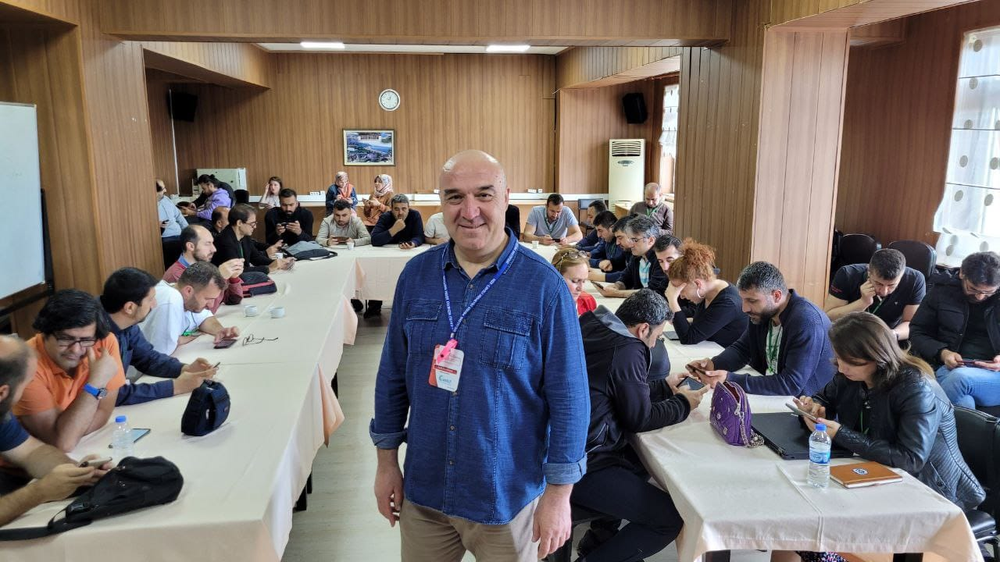

Eğitim ve Teknolojinin Kesişiminde Bir Yolculuk
Merhaba, ben Hasbi ERDOĞMUŞ. Coğrafya ve bilişim teknolojilerini harmanlayarak, öğrenme ortamlarına yenilikçi bir bakış açısı katmaya çalışıyorum.
1996 yılında 19 Mayıs Üniversitesi Eğitim Fakültesi Coğrafya Öğretmenliği bölümünden mezun oldum ve meslek hayatımın ilk 11 yılını sahada Coğrafya öğretmeni olarak geçirdim.
2008 yılından bu yana Bergama İlçe Milli Eğitim Müdürlüğü bünyesinde, Bakanlık görevlendirmesiyle İlçe Bilişim Koordinatörü olarak görev yapmaktayım.
"Eğitim teknolojileri eğitimlerini bürokratik bir zorunluluk olarak değil; çağı yakalamanın ve Z kuşağının dilini konuşmanın vazgeçilmez bir ihtiyacı olarak görüyorum. Amacım, sadece araçları tanıtmak değil, eğitim-öğretim süreçlerinin kalitesini artırmaktır. Bu dönüşüm yolculuğundaki başlangıç noktam ise bellidir: Öğretmenlerimizin zihninde, 'atomu parçalamaktan daha zor olan' o önyargıları kırmak."

Neler Yapıyorum?
Şu anda Yenilikçi Sınıf modeline uygun eğitim ortamlarının kurulması ve öğretmenlerimizin bu modern ekosisteme uyum sağlaması için aktif olarak eğitimler veriyorum. Sadece teorik değil, uygulamaya dayalı ve interaktif bir eğitim yaklaşımını savunuyorum.
Vizyonum
Amacım; Türkiye Yüzyılı Maarif Modeli ışığında, teknolojiyi eğitimin kalbine yerleştirerek, öğrencilerimize ve meslektaşlarıma küresel standartlarda bir dijital yetkinlik kazandırmaktır.
İlgi Duyduğum Alanlar
Eğitimci kimliğimle, modern mühendislik ve analiz araçlarıyla verileri görselleştirmeye çalışıyorum.
CBS & Uzaktan Algılama
Google Earth Engine ve Python (geemap) kullanarak uydu verileri üzerinden sel, deprem ve NDVI analizleri.
Yazılım Geliştirme
Python (Flask) ile web tabanlı servisler, sesli asistan projeleri ve Looker Studio ile veri görselleştirme.
İnteraktif İçerik
Articulate Storyline ile pedagojik açıdan zengin ders modülleri ve HTML5/JS optimizasyonu.
Geleceğin Teknolojileri
Unreal Engine ile "Eco-City" simülasyonları geliştirerek eğitimi sanal dünyalara taşıma.